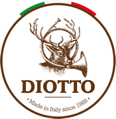

Il calzaturificio Diotto è specializzato nella produzione di calzature da caccia e montagna di alta qualità.
Super Woodcock
Scarpone con tomaia composta da pelle naturale piu’ poliuretano per proteggere lo scarpone da rovi e pietre, facile da pulire perche’ la pelle trattata con il poliuretano spalmato non fa attecchire il fango.
Woodcocl
Scarpone con tomaia composta da pelle naturale piu’ poliuretano per proteggere lo scarpone da rovi e pietre, facile da pulire perche’ la pelle trattata con il poliuretano spalmato non fa attecchire il fango.
Previous
Next
Fitwell è un prodotto 100% Made in Italy situato nel distretto di Montebelluna
Freeway
Outdoor, multiuso per tutti i giorni
Ghibli
Trekking impegnativo, lavori forestali
Previous
Next
In ogni manufatto Andrew vive la tradizione della calzatura italiana.
Bionico wood
Consigliato per Lavori boschivi intensi in alta quota con roccia, neve e ghiaccio
Chamonix gold
Consigliato per uso cittadino ed outdoor in autunno/inverno
Morbido, confortevole e caldo
Costruzione Artigianale con Guardolo in Cuoio
Previous
Next